geom_histogram
Histogram
Details
The bar geom is used to produce 1d area plots: bar charts for categorical x, and histograms for continuous y. stat_bin explains the details of these summaries in more detail. In particular, you can use the weight aesthetic to create weighted histograms and barcharts where the height of the bar no longer represent a count of observations, but a sum over some other variable. See the examples for a practical example.
By default, multiple x's occuring in the same place will be stacked a top one another by position_stack. If you want them to be dodged from side-to-side, check out position by 'dodging' overlaps to the side'>position_dodge. Finally, position_fill shows relative propotions at each x by stacking the bars and then stretch or squashing them all to the same height
Bar charts are sometimes used not as a distributional summary, but as instead of a dotplot. Generally, it's preferable to use a dotplot (see geom_point) as it has a better data-ink ratio, and bars are not interpretable as sums. However, if you do want to create this type of plot, you can set y to the value you have calculated. See the example.
A bar chart maps the height of the bar to a variable, and so the base of the bar must always been shown to produce a valid visual comparison. Naomi Robbins has a nice article on this topic. This is the reason it doesn't make sense to use a log-scaled y axis.
See layer and qplot for more information on creating a complete plot from multiple components.
Aesthetics
The following aesthetics can be used with geom_histogram. They are listed along with their default value. All geoms and scales can also use the group aesthetic. Read how this important aesthetic works in scale_group. Typically, you will associate an aesthetic with a variable in your data set. To do this, you use the aes function: geom_histogram(aes(x = var)). Scales control the details of the mapping between data and aesthetic properties; after each aesthetic are listed scales that can be used with that aesthetic. The scale documentation will also provide references to help you interpret the default values.
Instead of mapping an aesthetic to a variable in your dataset, you can also set it to a fixed value. See the parameters section for details.
colour:
NA(scales: brewer, gradient, gradient2, hue, manual)fill:
grey60(scales: brewer, gradient, gradient2, hue, manual)min:
0width:
resolution(x) * 0.9size:
1(scales: area, manual, size, size_discrete)max:
y
Parameters
When an aesthetic is used an a parameter, like geom_histogram(colour = 3), it will override mappings from data.
colour, border colourfill, internal colourmin, minimum of intervalwidth, width of geomsize, sizelinetype, line typemax, maximum of interval
Default statistic
stat_bin. Override with the stat argument: geom_histogram(stat="identity")
Default position
position_stack. Override with the position argument: geom_histogram(position="jitter").
See also
- stat_bin: for more details of the binning alogirithm
- position by 'dodging' overlaps to the side'>position_dodge: for creating side-by-side barcharts
- position_stack: for more info on stacking
Examples
> m <- ggplot(movies, aes(x=rating)) > m + geom_histogram() 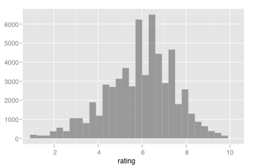 > m + geom_histogram(aes(y = ..density..)) + geom_density() 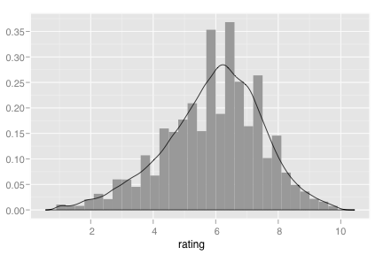 > > m + geom_histogram(binwidth=1) 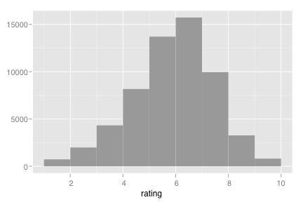 > m + geom_histogram(binwidth=0.5) 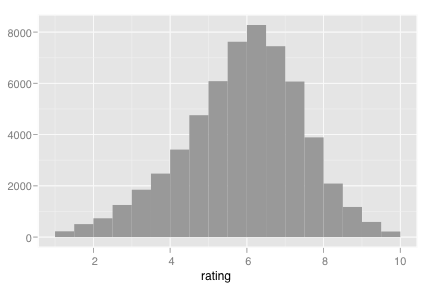 > m + geom_histogram(binwidth=0.1) 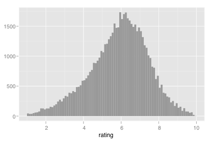 > > # Add aesthetic mappings > m + geom_histogram(aes(weight = votes)) 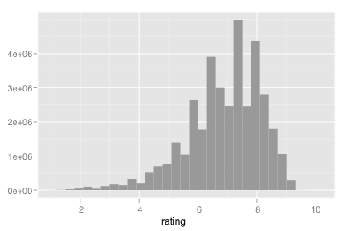 > m + geom_histogram(aes(y = ..count..))> m + geom_histogram(aes(fill = ..count..)) 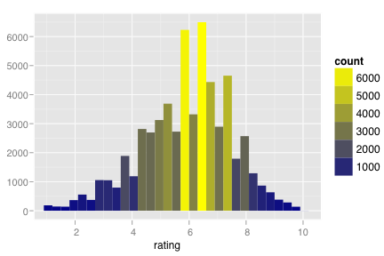 > > # Change scales > m + geom_histogram(aes(fill = ..count..)) + scale_fill_gradient(low="green", high="red") 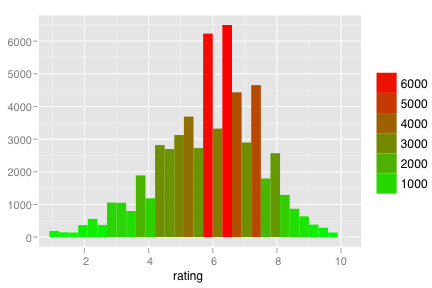 > > m <- m + aes(x=votes) > m + geom_histogram() + scale_x_log() 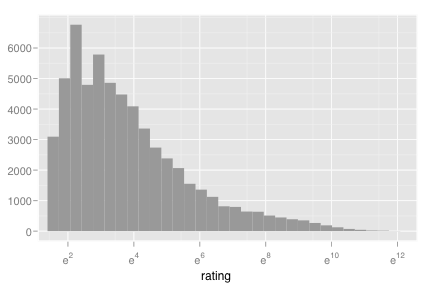 > m + geom_histogram() + scale_x_sqrt() 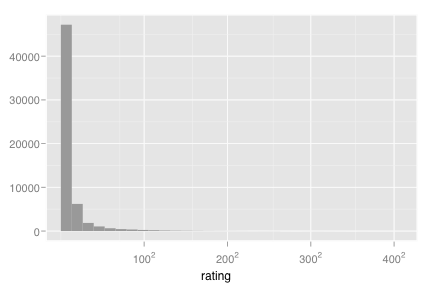 > > # Change coordinate systems > m + geom_histogram() + coord_trans(y = "sqrt") 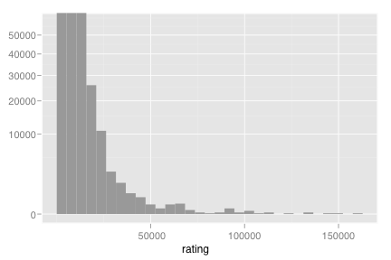 > > # Set aesthetics to fixed value > m + geom_histogram(colour="darkgreen", fill="white") + aes(x=rating) 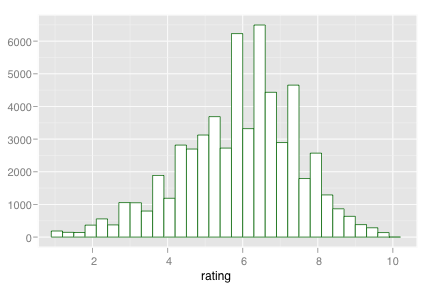 > > # Use facets > m <- ggplot(movies, aes(x=rating)) + facet_grid(Action ~ Comedy, margins=TRUE) > m + geom_histogram() 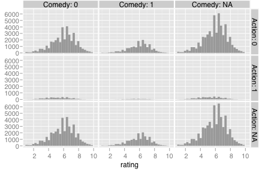 > > # Multiple histograms on the same graph > # see ?position, ?position_fill, etc for more details > ggplot(diamonds, aes(x=price)) + geom_bar() 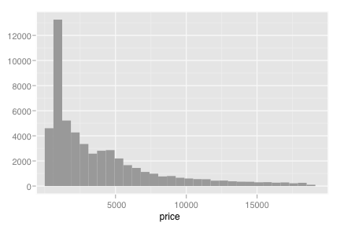 > hist_cut <- ggplot(diamonds, aes(x=price, fill=cut)) > hist_cut + geom_bar() 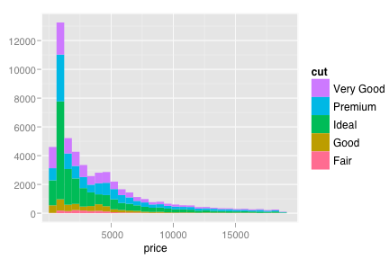 # defaults to stacking > hist_cut + geom_bar(position="fill") 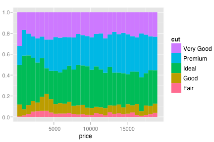 > hist_cut + geom_bar(position="dodge") 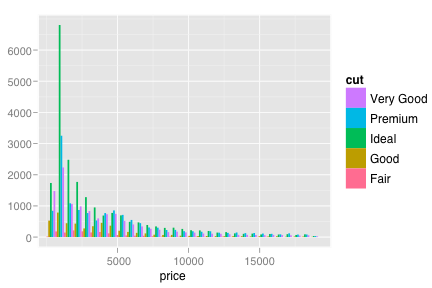 > > # Use qplot instead > qplot(rating, data=movies, geom="histogram")
> qplot(rating, data=movies, weight=votes, geom="histogram")
src "\n"